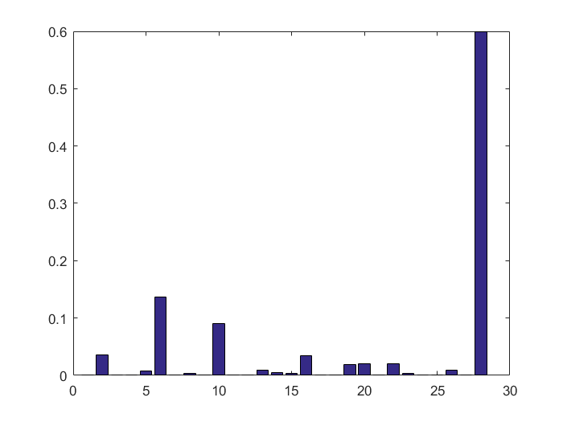

Travaux Pratique - Chaines de Morkov
ZHU Fangda
Contents
2. Chaîne de Markov
eval('correspondance')
2.a. Matrice de transitions
load 'bigramenglish' load 'bigramfrancais'
La premier ligne correspond aux propabilités de l'occurence au début de mot pour chaque lettre. La dernier colonnes correspond aux probabilités de l'occurence à la fin du mot pour chaque lettre de l'alphabet. On peut afficher la transition la plus fréquente depuis chaque lettre avec méthode ci-dessous:
[value, index] = max(bigramenglish'); a = corresp(index + 28);
La resultat indique que la lettre 't' est le plus fréquente lettre comme la premier lettre du mot.
display(a)
a =
Columns 1 through 11
't' 'n' 'e' 'o' ' ' ' ' ' ' ' ' 'e' 'n' 'o'
Columns 12 through 22
' ' 'e' 'e' ' ' 'n' 'e' 'u' 'e' ' ' 'h' 'r'
Columns 23 through 28
'e' 'a' 't' ' ' 'e' ' '
2.b Générer un mot
L'implémentation du fonction etat_suivant
function [ next_state ] = etat_suivant(current_state, trans_matrix ) %UNTITLED3 Summary of this function goes here % Input: % current_state : current state % trans_matrix : transition matrix % Output: % next_state : the plus possible state known the current state. unif = rand(); cs = cumsum(trans_matrix(current_state,:)); next_state = 1; while (unif >= cs(next_state)) next_state = next_state + 1; end
L'implémentation du fonction genere_stat_seq
function [ seq ] = genere_state_seq(trans_matrix) % Generate a sequence of lettre by transition matrix % Input: % trans_matrix : The transition matrix for the HMM % Output: % seq : index sequence of lettre state = 1; seq = []; end_flag = size(trans_matrix, 1); while(state ~= end_flag) state = etat_suivant(state, trans_matrix); seq = [seq state]; end
L'implémentation du fonction display_seq
function [ letter_seq ] = display_seq( index_seq, corresp ) % Transform a sequence of state to a sequence of lettre % Input : % index_seq : sequence of state % corresp : a dictionary. % The key is the state , and the value is the letter. % Output : % lettrer_seq : sequence of lettre letter_seq = []; for i = 1:size(index_seq,2) state = index_seq(i); if(state==1 && index_seq(i-1)==28) letter_seq = [letter_seq ' ']; elseif(state == 28) continue; else letter_seq = [letter_seq corresp{index_seq(i),2}] ; end end letter_seq = char(letter_seq); display(letter_seq);
a = genere_state_seq(bigramenglish); seq = display_seq(a, corresp);
letter_seq = as
bar(1:28,bigramenglish(5,:));
On peut imagine que l'on jette un boule dans le zone blue aléatoirement, si on jette dans le zone de lettre a, alore on reprise 'a' comme l'état suivant. Comme la proportion surface de la zone de 'a' sur la surface total bien correspond à son probabilité. Avec cette methode, on peut tranformer la distribution uniformément à la distribution décris par la matrix.
3. Générer une phrase
L'implémentation du fonction modifie_mat_dic
function [ corresp_post, trans_mat_post] = modifie_mat_dic(corresp_ori, trans_mat_ori ) % Transform the origin transition matrix and dict. % Input : % corresp_ori : the original dictionary % trans_mat_ori : the original transition matrix % Output : % corresp_post : the dictionary after transformation % trans_mat_post : the original after transformation % corresp_post = corresp_ori; corresp_post{29,2} = '.'; corresp_post{29,1} = 29; trans_mat_post = trans_mat_ori; trans_mat_post(:,29) = 0; trans_mat_post(29,:) = 0; trans_mat_post(28,28) = 0.0; trans_mat_post(28, 1) = 0.9; trans_mat_post(28, 29) = 0.1; trans_mat_post(29,29) = 1; end
[dict, trans_matrix] = modifie_mat_dic(corresp, bigramenglish); a = genere_state_seq(trans_matrix); seq = display_seq(a, dict);
letter_seq = lint to fan dristh.
4. Reconnaissance de la langue
L'implémentation du fonction modifie_mat_dic
function [ likehood, likehood_log ] = calc_vraisemblance(phrase, trans_matrix, dict) % calculate likelihood function for a sentence specified by the % arguements. % Input : % phrase : a string to calculate the likehood. % trans_matrix : the transition matrix % dict : a dictionary. The key is the state, the value is the letter. % Output : % likehood : the likehoor for the fonction % likehood_log : the log(likehood) in order to get result more % exact. % preprocessing of text phrase = lower(strtrim(phrase)); phrase = ['-' phrase]; phrase = strrep(phrase,' ','+-'); phrase = strrep(phrase,'.','+.'); seq_size = length(phrase); state_seq = zeros(1,seq_size); for i = 1: seq_size if(phrase(i) == '-') state = 1; elseif(phrase(i) == '+') state = 28; else state = find(strcmp(phrase(i), dict(:,2)),1); end state_seq(1,i) = state; end likehood = 1; likehood_log = 0; for i = 2:seq_size likehood = likehood * trans_matrix(state_seq(i-1),state_seq(i) ); likehood_log = likehood_log + log(trans_matrix(state_seq(i-1),state_seq(i) )); end
[dict, trans_matrix_en] = modifie_mat_dic(corresp, bigramenglish); [dict, trans_matrix_fr] = modifie_mat_dic(corresp, bigramfrancais); [pro_en, pro_log_en] = calc_vraisemblance('to be or not to be.', trans_matrix_en, dict) [pro_fr, pro_log_fr] = calc_vraisemblance('to be or not to be.', trans_matrix_fr, dict) display(strcat(['The likehood for the English is ' num2str(pro_en) ])); display(strcat(['The likehood for the French is ' num2str(pro_fr) ]));
pro_en = 8.1129e-20 pro_log_en = -43.9582 pro_fr = 5.9602e-30 pro_log_fr = -67.2924 The likehood for the English is 8.1129e-20 The likehood for the French is 5.9602e-30
D'après la vraisemblance, ce phrase est plitôt anglais.
[dict, trans_matrix_en] = modifie_mat_dic(corresp, bigramenglish); [dict, trans_matrix_fr] = modifie_mat_dic(corresp, bigramfrancais); [pro_en, pro_log_en] = calc_vraisemblance('etre ou ne pas etre.', trans_matrix_en, dict) [pro_fr, pro_log_fr] = calc_vraisemblance('etre ou ne pas etre.', trans_matrix_fr, dict) display(strcat(['The likehood for the English is ' num2str(pro_en) ])); display(strcat(['The likehood for the French is ' num2str(pro_fr) ]));
pro_en = 4.4623e-24 pro_log_en = -53.7664 pro_fr = 1.1457e-19 pro_log_fr = -43.6131 The likehood for the English is 4.4623e-24 The likehood for the French is 1.1457e-19
D'après la vraisemblance, ce phrase est plitôt anglais.